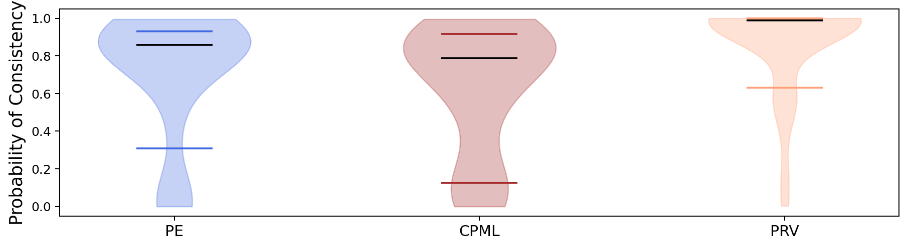
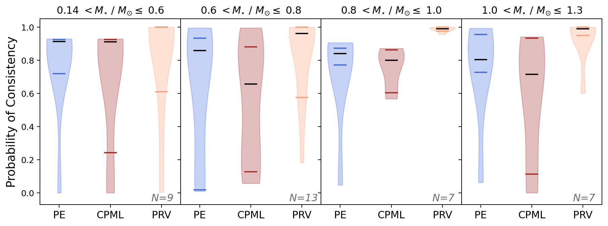
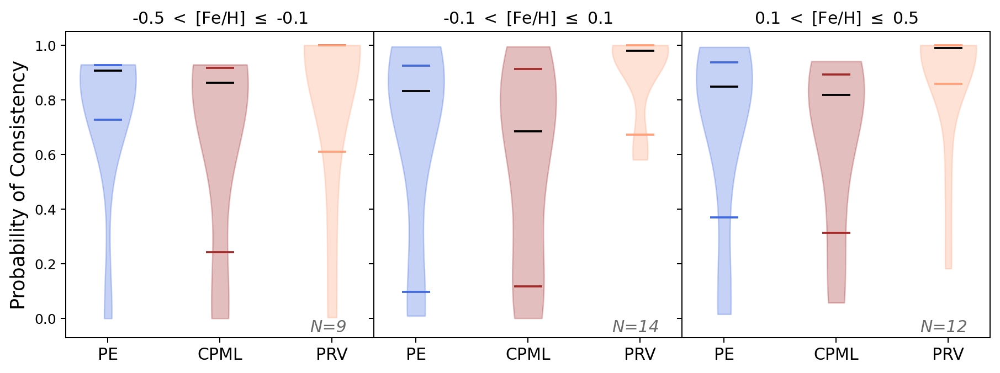

Figures 6, 7, and 8: Violin Plots#
1. Notebook Setup#
import numpy as np
import matplotlib.pyplot as plt
import pandas as pd
pd.options.mode.chained_assignment = None
2. Import Data#
# Load data
all_planets = pd.read_csv('../data/planets.csv')
# Mask the data
mass_mask = all_planets['env mass flag'] == 0
planets = all_planets[mass_mask]
# Reindex using the system names
planets.index = planets['planet name']
# planets = planets.reset_index(drop=True)
3. Organize Data#
# Assemble a list of all defined planet names
planetnames = [x for x in list(planets['planet name']) if str(x) != 'nan']
# Initialize total probability to be less than 0
planets['PEprobtot'] = planets['CPMLprobtot'] = planets['PRVprobtot'] = -1.0
# For each planet, save its minimum mechanism probability
for name in planetnames:
first_name = np.where(planets['planet name']==name)[0][0]
planets.iloc[first_name,-3] = planets.loc[name,'PEprob'].min()
planets.iloc[first_name,-2] = planets.loc[name,'CPMLprob'].min()
planets.iloc[first_name,-1] = planets.loc[name,'PRVprob'].min()
# Remove nonsensical probabilities
planets = planets[planets['PEprobtot'] >= 0]
4. Helper Functions#
# A function to bin the data using stellar mass
makebins = lambda num,bounds,column: [(planets[column] <= bounds[i+1]) & (planets[column] > bounds[i]) for i in range(num)]
# A function to package probabilities for plotting
makeboxes = lambda num,probPE,probCPML,probPRV: [(probPE[i], probCPML[i], probPRV[i]) for i in range(num)]
# Fill probability lists
def prob_lists(bins):
probPE = [planets['PEprobtot'][bins[b]] for b in range(num)]
probCPML = [planets['CPMLprobtot'][bins[b]] for b in range(num)]
probPRV = [planets['PRVprobtot'][bins[b]] for b in range(num)]
return probPE,probCPML,probPRV
5. Plot Figure 6#
# Set the number of bins and the bounds
num,bounds = 1,(0, 1.3)
# Make the bins
bins = makebins(num, bounds, 'star mass')
# Calculate the probability distributions
probPE,probCPML,probPRV = prob_lists(bins)
# Set the plot colors
colors = ['royalblue', 'brown', 'lightsalmon']
# Create the figure and axes
fig, ax=plt.subplots(1,num, dpi=180., facecolor='white', sharey=True, figsize=(12,3))
fig.subplots_adjust(wspace=0)
# Create the boxes to be plotted
box = makeboxes(num, probPE, probCPML, probPRV)
# Create labels and vplots lists
labels,vplots = ['PE', 'CPML', 'PRV'],[]
# Plot each of the violin plots
for i in range(num):
vplots.append(ax.violinplot(box[i], showmedians=True, showextrema=False, quantiles=[[.16,.84], [.16,.84], [.16,.84]]))
# Plot correct colors for patches and edges
for box in vplots:
for patch, color in zip(box['bodies'], colors): patch.set_color(color)
box['cmedians'].set_edgecolor('k')
box['cquantiles'].set_edgecolor(sum([[c,c] for c in colors],[]))
# Modify axis labels
ax.set_xticks([1,2,3])
ax.set_xticklabels(labels, fontsize=12)
ax.set_ylabel('Probability of Consistency', fontsize=14)
# Save Figure 6
plt.savefig('../figures/Figure 6.png', dpi=180., bbox_inches='tight')

6. Plot Figure 7#
# Set the number of bins and the bounds
num,bounds = 4,(0.138, 0.6, 0.8, 1.0, 1.3)
# Make the bins
bins = makebins(num, bounds, 'star mass')
# Calculate the probability distributions
probPE,probCPML,probPRV = prob_lists(bins)
# Create the figure and axes
fig, ax=plt.subplots(1,num, dpi=180., facecolor='white', sharey=True, figsize=(12,4))
fig.subplots_adjust(wspace=0)
# Create the boxes to be plotted
box = makeboxes(num, probPE, probCPML, probPRV)
# Create labels, vplots, titles, and text lists
labels,vplots,titles,text = ['PE', 'CPML', 'PRV'],[], [r'0.14 $ < M_{\star}$ / $M_{\odot} \leq $ 0.6', \
r'0.6 $ < M_{\star}$ / $M_{\odot} \leq $ 0.8', r'0.8 $ < M_{\star}$ / $M_{\odot} \leq $ 1.0', \
r'1.0 $ < M_{\star}$ / $M_{\odot} \leq $ 1.3'], \
[{'x':2.8,'text':'N=9'},{'x':2.75,'text':'N=13'},{'x':2.8,'text':'N=7'},{'x':2.8,'text':'N=7'}]
# Plot each of the violin plots and set axis labels for each
for i in range(num):
vplots.append(ax[i].violinplot(box[i], showmedians=True, showextrema=False, quantiles=[[.16,.84], [.16,.84], [.16,.84]]))
ax[i].set_xticks([1,2,3])
ax[i].set_xticklabels(labels, fontsize=12)
ax[i].set_title(titles[i])
ax[i].set_ylim(-0.07, 1.05)
ax[i].text(text[i]['x'], -0.05, text[i]['text'], fontsize=12, fontstyle='italic', color='dimgray')
if i == 0: ax[i].set_ylabel('Probability of Consistency', fontsize=14)
# Plot correct colors for patches and edges
for box in vplots:
for patch, color in zip(box['bodies'], colors): patch.set_color(color)
box['cmedians'].set_edgecolor('k')
box['cquantiles'].set_edgecolor(sum([[c,c] for c in colors],[]))
# Save Figure 7
plt.savefig('../figures/Figure 7.png', dpi=180., bbox_inches='tight')

7. Plot Figure 8#
# Set the number of bins and the bounds
num,bounds = 3,(-0.5,-0.1,0.1,0.5)
# Make the bins
bins = makebins(num, bounds, 'star met')
# Calculate the probability distributions
probPE,probCPML,probPRV = prob_lists(bins)
# Create the figure and axes
fig, ax=plt.subplots(1,num, dpi=180., facecolor='white', sharey=True, figsize=(12,4))
fig.subplots_adjust(wspace=0)
# Create the boxes to be plotted
box = makeboxes(num, probPE, probCPML, probPRV)
# Create labels, vplots, titles, and text lists
labels,vplots,titles,text = ['PE', 'CPML', 'PRV'],[], [r'-0.5 $<$ [Fe/H] $\leq$ -0.1', \
r'-0.1 $<$ [Fe/H] $\leq$ 0.1', r'0.1 $<$ [Fe/H] $\leq$ 0.5'], \
[{'x':2.8,'text':'N=9'},{'x':2.75,'text':'N=14'},{'x':2.75,'text':'N=12'}]
# Plot each of the violin plots and set axis labels for each
for i in range(num):
vplots.append(ax[i].violinplot(box[i], showmedians=True, showextrema=False, quantiles=[[.16,.84], [.16,.84], [.16,.84]]))
ax[i].set_xticks([1,2,3])
ax[i].set_xticklabels(labels, fontsize=12)
ax[i].set_title(titles[i])
ax[i].set_ylim(-0.07, 1.05)
ax[i].text(text[i]['x'], -0.05, text[i]['text'], fontsize=12, fontstyle='italic', color='dimgray')
if i == 0: ax[i].set_ylabel('Probability of Consistency', fontsize=14)
# Plot correct colors for patches and edges
for box in vplots:
for patch, color in zip(box['bodies'], colors): patch.set_color(color)
box['cmedians'].set_edgecolor('k')
box['cquantiles'].set_edgecolor(sum([[c,c] for c in colors],[]))
# Save Figure 8
plt.savefig('../figures/Figure 8.png', dpi=180., bbox_inches='tight')
